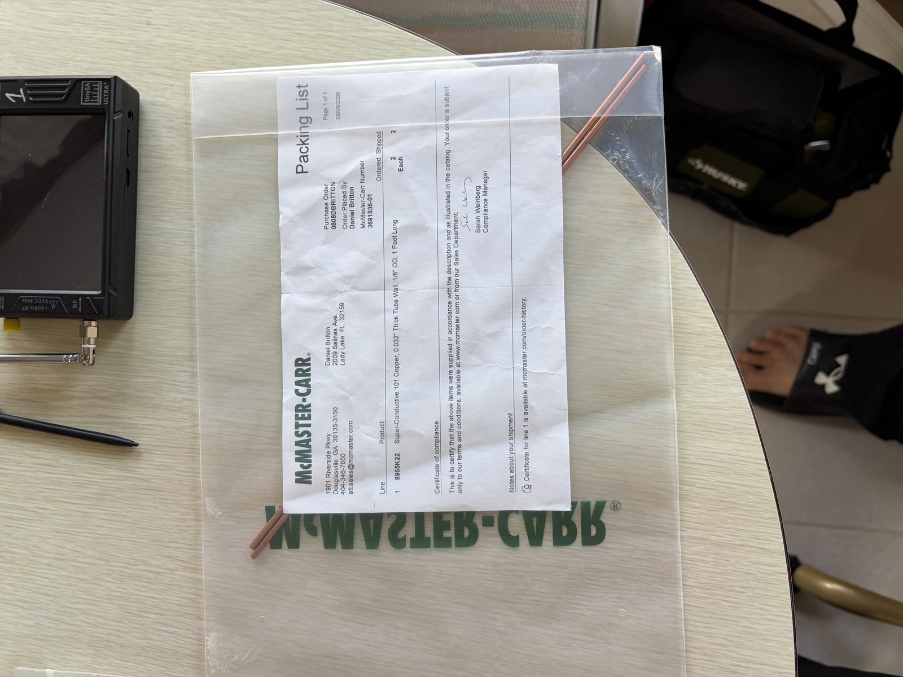
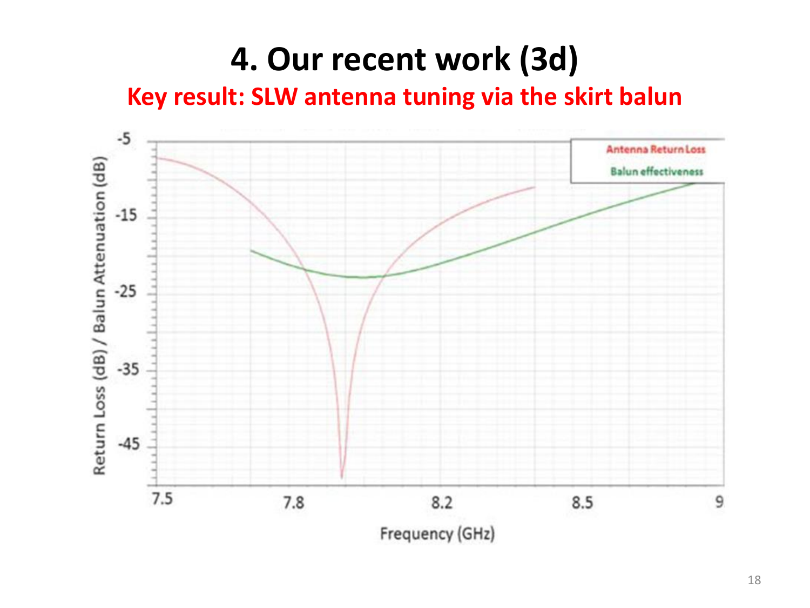
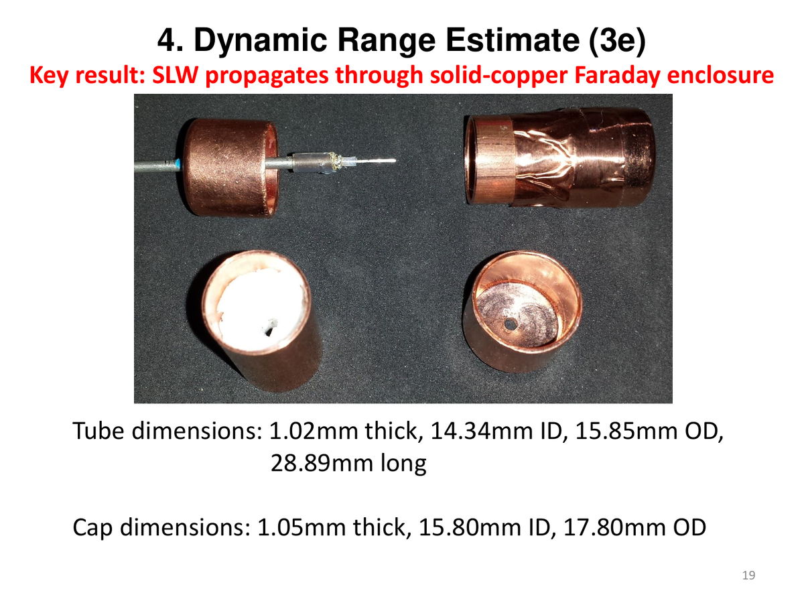

Manufacturing guide · Keyport-style sleeve · A · B · 8 GHz
Sleeve balun on RG-405/U — cut, solder, verify
Shop page for building a close-fitting λ/4 sleeve balun (Navy Keyport / US 12,525,711 geometry — open end toward the tip/sphere), not Hively US 9,306,527 Fig. 2A’s fat annular skirt. Cut lengths track 1/f for Experiment A (1296 MHz), Experiment B (433.59 MHz), and an optional 8 GHz Hively-class build. Live slider calculator: tools.html. Interactive dual-sphere SNR draft: sleeve-balun-snr.html. E∥ maps: sleeve-balun-efield.html.
Educational RF construction only. A sleeve choke is ordinary amateur practice; calling the stub an “SLW launcher” is the disputed physics, not the metalwork. Use a licensed band for on-air work (23 cm for A; 70 cm for B). 8 GHz needs appropriate licensed / lab gear — do not invent an unlicensed radiator. Geometry paraphrased from public patents and Dr. Hively’s published talks / clarifying email (no private dump).
Experiment B note. The original Monstein–Wesley 433.59 MHz ball page used no balun. This shop order adds Keyport-style sleeves for A and B (and maybe 8 GHz later). Keep B’s sphere feed philosophy (coax into the ball, outer as shield); the sleeve sits on the coax behind the ball.
1. Sleeve ≠ skirt (geometry that matters when you solder)
Both structures are λ/4 conductive tubes around the coax outer. The difference is which end is open and where the tube is bonded to the shield:
Sleeve (build this)
Open end toward the exposed center-conductor stub. Electrical bond to the outer conductor is λ/4 back from that open end (the “cold” end, away from the tip). Looks like a sleeve pulled over the jacket when the stub points up. Preferred for nulling displacement / common-mode current on the shield (Navy US 12,525,711 style; hub how-to).
Skirt (do not build for 1296)
Open end away from the stub; bond near the feed / tip end. Looks like a skirt hanging down when the stub points up. US 9,306,527 Fig. 2A is a larger-diameter annular skirt that can also act as a counterpoise and can launch extra TEM. Historical patent geometry — not this shop order.
In both cases the gap between coax outer and tube is filled with insulator (two layers of electrical tape is a common bench filler). Silver solder (or ordinary electronics solder with a clean fillet) bonds tube ↔ shield at the shorted end only. Strip any outer jacket so the bond lands on bare outer conductor to within about 1 mm of the tube end.
cold end (solder ring) open at feed stub tip
| | |
v v v
======+==============================| |
coax |######## SLEEVE (λ/4) ########| PTFE cut back |
outer |######## ##|======= center =======*
======+==============================|
^
bond tube to shield here only; leave feed end unsoldered
ASCII is schematic. Real tube is snug on the 0.086″ jacket — not a fat radiating skirt. Interactive lengths: tools.html. Side-view SVG on setup: setup.html#sleeve.
2. Frequency → wavelength table (A · B · 8 GHz)
c = 299 792 458 m/s. Free-space λ = c/f. Sleeve and stub scale as 1/f. Physical sleeve length ≈ (λ/4)×VF when the coax–tube gap has dielectric (tape); start at VF≈1 (air) and trim short if needed.
Build
f
λ
λ/4 sleeve
λ/10 stub
λ/4 stub (TEM ctrl)
Experiment B · 70 cm balls
433.59 MHz
691.4 mm
172.9 mm
69.1 mm
172.9 mm
Experiment A · 23 cm cage / sphere
1296.000 MHz
231.3 mm
57.8 mm
23.1 mm
57.8 mm
8 GHz · Hively / IARD class
8.000 GHz
37.5 mm
9.4 mm
3.7 mm
9.4 mm
433.59 MHz is the Monstein–Wesley ball frequency on this hub. 1296.000 MHz is Experiment A. 8 GHz matches the IARD 2020 skirt-tuning band (historical skirt hardware; we still cut a sleeve if we build at 8 GHz). Interactive VF / custom f: tools.html.
Quick calculator (same formulas)
λ
—
λ/4 sleeve (physical)
—
λ/10 stub
—
λ/4 stub
—
Physical sleeve = (c/f)/4 × VF. Tube ID must still clear RG-405 (0.086″).
2b. Experiment A detail — first-article lengths at 1296.000 MHz
c = 299 792 458 m/s. Free-space λ = c / 1.296×10⁹ ≈ 231.3 mm.
Feature
Length
Notes
Free-space λ
231.3 mm
1296.000 MHz
λ/4 sleeve (air, VF≈1)
57.8 mm
Cut long; trim if gap dielectric lowers VF
First-article stub (λ/10)
23.1 mm
Exposed center conductor
TEM-control stub (λ/4)
57.8 mm
Optional later article, not first
RG-405/U outer OD
0.086″ (2.18 mm)
Solid copper outer
Center conductor
0.020″ (0.51 mm)
SPC / CCS
At 1.3 GHz the sleeve is ~6× longer than the 8 GHz IARD reference hardware below. Length must track 1/f. No 3λ ground disk.
3. BOM on hand (Aug 2026 receipts)
Parts photographed as received in Lady Lake, FL. Use these SKUs when reordering; confirm tube ID before cutting the sleeve.
Pasternack RG405/U-BULK
3 ft of 0.086″ semi-rigid coax, copper outer. Packing slip WPE398212 (11 Aug 2026). Enough for several stub assemblies plus scrap.
RG-405 jacket OD = 0.086″ → this ID does not clear the jacket
Fit note. 8965K22 is useful practice stock / scrap, but it will not slide over RG-405. For a snug sleeve over the jacket, reorder thin-wall copper or brass with ID ≳ 0.090″ (small air gap or two wraps of tape). Alternate: form copper foil into a tube and solder the seam. Do not force 8965K22 onto the coax.

Received: two 8965K22 tubes + TinySA Ultra (packing list PO 0808DBRITTON).
Also on the bench for this control path (already on kit.html / setup.html): SMA connectors for RG-405, 23 cm BPF in the TX chain, TinySA Ultra / NanoRFE VNA6000-A, silver-bearing solder, electrical tape for the sleeve–jacket gap, non-metallic TX sled.
4. Build steps (cold-end solder, open at feed)
Connector end. Cut RG-405 to overall length. Install SMA (or Type N) on the generator end in the ordinary way — no special balun connection at the connector.
Choose sleeve stock. Use a tube whose ID clears 0.086″ with only a thin gap (or foil). Cut a little longer than 57.8 mm so you can trim. Deburr inside and out.
Insulator in the gap. Two layers of electrical tape (or thin PTFE) over the jacket where the sleeve will sit. This sets VF < 1 if thick — plan to trim the physical length.
Strip the tip. Remove outer conductor and dielectric so 23.1 mm of center conductor remains as the first-article stub (or 57.8 mm for the TEM-control stub). Keep the stub straight; photograph against a ruler.
Slide and locate. Slide the sleeve on from the stub end until the open end sits at (or a millimetre behind) the dielectric cut-back. The opposite end is the cold end.
Solder the cold end only. Bond tube ↔ bare outer conductor all around at the cold end (away from the stub). Leave the feed/tip end of the sleeve open — no solder bridges. Silver solder OK if you have it.
Trim for VF. If the gap dielectric is significant, shorten toward electrical λ/4. Log physical length, VF estimate, and photos of fillet + open end.
Protect. Optional heat-shrink over the cold-end fillet. Keep the open end clear. Foam around the stub on the TX sled so it cannot bend in the bag.
TX chain. Keep the 23 cm BPF inside the Faraday wrap: Ultra SMA-F → filter → stub (setup.html#bpf). No 3λ ground disk.
5. Verify before any on-air claim
VNA6000-A — S11 of the sleeve-stub; optional TDR of the pigtail. See kit.html#vna6000.
Common-mode check — compare outer-conductor current / near-field probe with sleeve on vs a bare stub (same length). A working λ/4 sleeve should raise common-mode impedance at the design frequency.
Dummy load — leftover tone should die when the antenna is replaced by a load (leak hunt).
Log — frequency, physical sleeve length, stub length, solder photos, S11 export. Label CSV rows as archived sleeve-control if the primary run is the ¾″ sphere.
Hively & Land, “Evidence for Scalar-Longitudinal Photons,” IARD 2020 slides. Slide 18 shows historical skirt balun tuning near 8 GHz. If we build at 8 GHz we still use sleeve geometry (Keyport / open-toward-tip); cut from the table above (~9.4 mm λ/4), not by copying the old skirt hardware photos. Slide 19 is Faraday-tube dims, not the balun tube.

Slide 18 — antenna return loss vs balun effectiveness near 8 GHz (historical skirt-balun tuning). Scale lengths ×(8/1.296)≈6.2 for a rough 1296 starting point, then measure.

Slide 19 — solid-copper Faraday enclosure tube/cap dims from the 8 GHz dynamic-range test (ID 14.34 mm, length 28.89 mm). That is a cage part, not the RG-405 sleeve OD.
Full slide deck stays off this page (large). Patent / Navy sleeve language: US 12,525,711 · historical skirt patent: US 9,306,527 · library cards: library.html.
Related hub pages
setup.html#sleeve — novice side-view SVG inside the archived Cricket/bifilar block